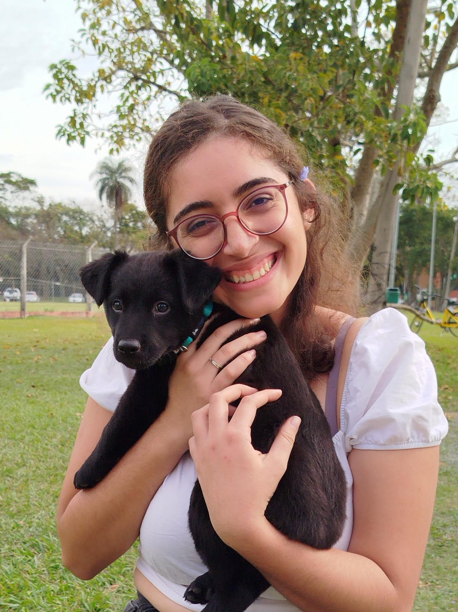

Alicia Cavalcante de Oliveira
Entre a organização da informação e o desenvolvimento de software
Minha trajetória acadêmica e profissional conecta Biblioteconomia, Ciência da Informação e Desenvolvimento de Software. Transito entre a gestão de informações, o tratamento de dados e o desenvolvimento de aplicações, buscando compreender como diferentes conhecimentos e tecnologias podem contribuir para a criação de soluções digitais.
Ver projetosdef perfil(palavra):
eu = ["bibliotecária", "dev", "ciência da informação", "tecnologia"]
if palavra in eu:
return True
return FalseSobre mim
Minha trajetória começou na Biblioteconomia, uma área que me apresentou diferentes formas de compreender, organizar e compartilhar o conhecimento. Durante minha formação na UNESP, tive a oportunidade de trabalhar com acervos, especialmente fotográficos, e conhecer de perto os processos envolvidos na preservação, representação e acesso à informação.
Com o tempo, minha curiosidade acabou me levando a outros caminhos. O interesse pelas tecnologias e pelas possibilidades de criar soluções digitais me aproximou do Desenvolvimento de Software, área na qual decidi continuar minha formação. Hoje, encontro no código uma nova maneira de explorar ideias, resolver problemas e construir coisas.
Fora dos estudos, sou apaixonada por animais, gosto de me perder entre histórias de ficção e fantasia e tenho uma boa companhia nas playlists de música pop. Também gosto de paisagens, flores e fotografias que conseguem guardar um pouco da beleza dos momentos cotidianos.
Acredito que boa parte de quem somos está nas coisas que escolhemos observar, aprender e guardar pelo caminho. Talvez seja por isso que minha trajetória tenha encontrado espaço entre livros, fotografias, informações e linhas de código.


Objetivo acadêmico
Aprofundar minha formação em Desenvolvimento de Software e construir uma trajetória acadêmica voltada à pesquisa científica. Tenho como objetivo participar de projetos de iniciação científica e prosseguir na pós-graduação, com interesse em mestrado e doutorado, investigando possíveis diálogos entre tecnologia, desenvolvimento de sistemas e Ciência da Informação.
Objetivo profissional
Atuar no desenvolvimento de software, especialmente em soluções back-end e gestão de dados, integrando conhecimentos de tecnologia e Ciência da Informação. Busco construir aplicações eficientes, acessíveis e orientadas às necessidades dos usuários
Áreas de interesse
Interesses.
- Desenvolvimento web—Back-end.
- Python
- Banco de Dados
- Metadados—Catalogação.
- Bibliotecas.
- Tesauros
- Vocabulários Controlados